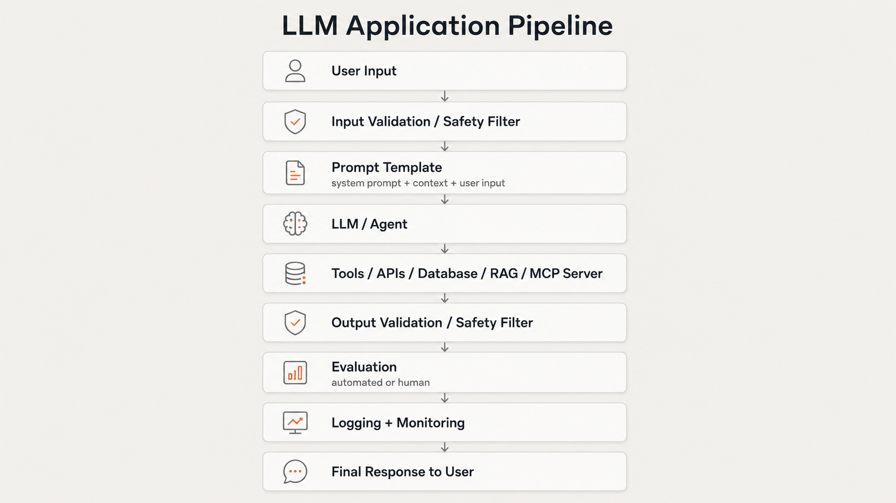
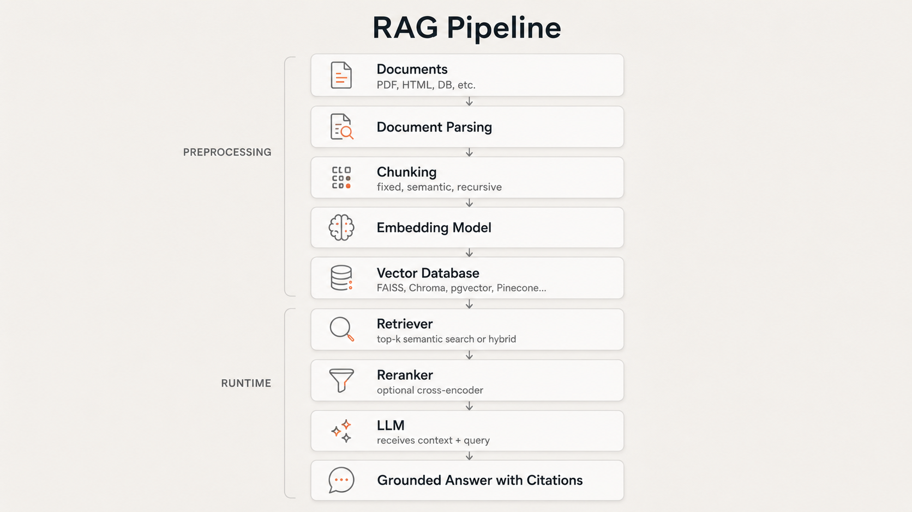
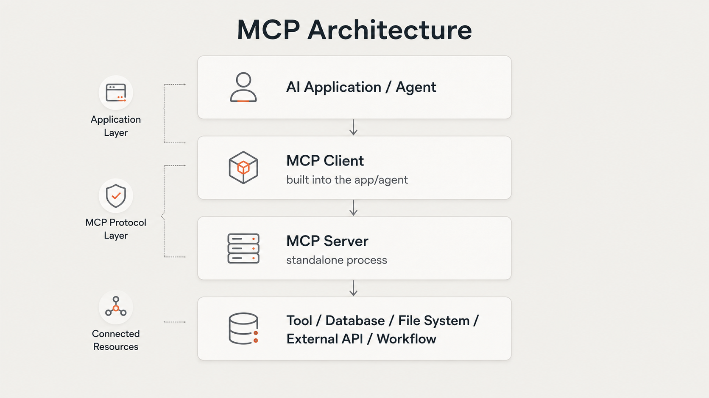
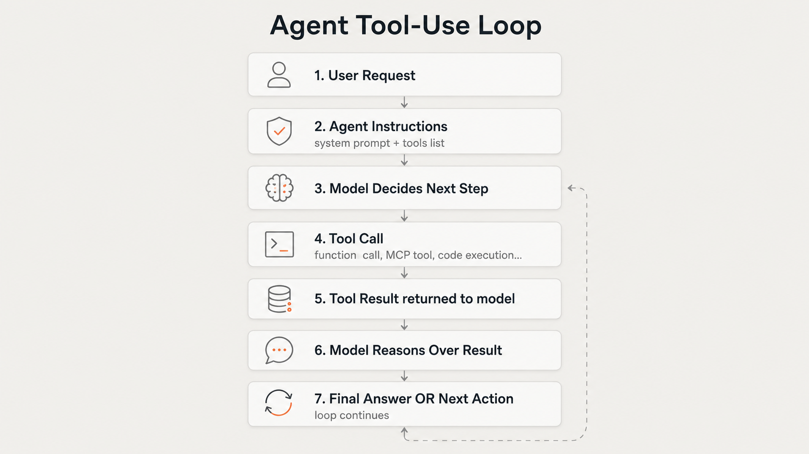

AI Engineer Study Notes¶
A practical, structured reference for learning AI Engineering from fundamentals to production. Built for studying, revision, interviews, and project building.
Purpose¶
This repository is a personal study system for AI Engineering. It covers the full stack of skills needed to design, build, ship, and evaluate AI-powered applications — from LLM basics to production deployment.
It is written for someone who learns by building. Theory is included where it matters, not as a prerequisite.
Not a course. Not a tutorial series. A working reference.
Study Philosophy¶
- Build first. Understand the mechanics after you have something running.
- Know why each component exists, not just how to use it.
- Study failure modes as seriously as success patterns.
- Treat every concept as something you may need to explain in an interview or defend in a code review.
- Cover the full stack: prompting → retrieval → tools → agents → safety → deployment.
AI Engineer System Map¶
This is the full pipeline of a production AI system. Every module in this repo maps to one or more layers here.

RAG System Map¶

MCP System Map¶

MCP standardizes how AI apps connect to external capabilities. One MCP server can serve multiple clients. See 08_mcp/.
Agent Loop Map¶

Learning Sequence¶
Follow this order. Each module builds on the previous.
| # | Module | Status |
|---|---|---|
| 00 | Roadmap | |
| 01 | AI / LLM Basics | |
| 02 | Prompt Engineering | |
| 03 | Structured Outputs | |
| 04 | LLM APIs + Backend | |
| 05 | Embeddings + Semantic Search | |
| 06 | RAG | |
| 07 | Tool Calling | |
| 08 | MCP — Model Context Protocol | |
| 09 | Agents | |
| 10 | Evaluations | |
| 11 | Memory + Context Management | |
| 12 | Prompting vs RAG vs Fine-tuning vs Agents | |
| 13 | Safety + Guardrails | |
| 14 | Production Deployment | |
| 15 | Portfolio Projects |
Use the Status column to track your progress: leave blank, add In progress, or Done.
Full Module Map¶
00 Roadmap¶
01 AI / LLM Basics¶
- AI vs ML vs Deep Learning
- What Is an LLM
- Tokens
- Context Window
- Embeddings Intro
- Transformers High Level
02 Prompt Engineering¶
- Prompt Basics
- Role / Task / Context / Format
- Few-Shot Prompting
- Prompt Templates
- Prompt Iteration
- Prompt Failure Modes
- Prompt Examples
03 Structured Outputs¶
- Why Structured Outputs
- JSON Outputs
- Schemas
- Pydantic Validation
- Extraction Tasks
- Structured Output Project
04 LLM APIs + Backend¶
- OpenAI API Basics
- Claude API Basics
- FastAPI Basics
- Environment Variables
- API Error Handling
- Logging AI Requests
- Backend Project
05 Embeddings + Semantic Search¶
- What Are Embeddings
- Cosine Similarity
- Vector Databases
- Keyword vs Semantic Search
- Hybrid Search
- Semantic Search Project
06 RAG¶
- What Is RAG
- RAG Architecture
- Document Loading
- Chunking
- Retrieval
- Reranking
- Grounded Generation
- Citations
- RAG Failure Modes
- RAG Project
07 Tool Calling¶
- What Is Tool Calling
- Function Schemas
- Read Tools vs Write Tools
- Tool Safety
- Human Approval
- SQL Tool Project
08 MCP — Model Context Protocol¶
- What Is MCP
- Why MCP Exists
- MCP Architecture
- MCP Client / Server / Host
- MCP Tools / Resources / Prompts
- MCP vs Tool Calling
- MCP vs API
- MCP Security
- Building an MCP Server
- MCP Project
09 Agents¶
- What Is an Agent
- Agent Loop
- Agent vs Workflow
- Agent Types
- Handoffs
- Guardrails for Agents
- Tracing
- Agent Project
10 Evaluations¶
- Why Evals Matter
- Eval Dataset
- Prompt Evals
- RAG Evals
- Agent Evals
- Structured Output Evals
- Human Evaluation
- Eval Project
11 Memory + Context¶
12 Prompting vs RAG vs Fine-tuning vs Agents¶
13 Safety + Guardrails¶
- Hallucination
- Prompt Injection
- Data Leakage
- Unsafe Tool Calls
- Input Guardrails
- Output Guardrails
- Safety Checklist
14 Production Deployment¶
15 Portfolio Projects¶
Resources¶
Where MCP Fits¶
MCP (Model Context Protocol) is covered in Module 08, but it intersects with several other modules:
| Module | MCP Relevance |
|---|---|
| 07 Tool Calling | MCP is an alternative standardized layer on top of tool calling |
| 09 Agents | Agents can call MCP servers as their tool execution layer |
| 13 Safety | MCP servers can expose dangerous capabilities — security matters |
| 14 Production | MCP servers are deployable services that need monitoring |
MCP sits between an agent and the tools it uses. It standardizes the protocol so that any MCP-compatible client can use any MCP-compatible server, without custom integration per tool.
Project Roadmap¶
| Project | Core Skills Covered | Module Dependencies |
|---|---|---|
| Semantic Search Engine | Embeddings, vector DB, cosine similarity | 05 |
| Financial RAG Assistant | RAG, chunking, retrieval, citations | 05, 06 |
| SQL Agent | Tool calling, function schemas, safety | 07 |
| Workflow Agent | Agents, handoffs, tracing, guardrails | 09 |
| Full Eval Suite | Evals for RAG + agents | 10 |
Build in sequence. Each project is a prerequisite for the next.
Suggested Weekly Study Plan¶
This is a suggested pace. Adjust based on your available time.
| Week | Focus | Modules |
|---|---|---|
| 1 | Foundations | 00, 01 |
| 2 | Prompting + Structured Output | 02, 03 |
| 3 | APIs + Backend | 04 |
| 4 | Embeddings + Search | 05 |
| 5 | RAG (core) | 06 |
| 6 | Tool Calling + MCP | 07, 08 |
| 7 | Agents | 09 |
| 8 | Evals + Memory | 10, 11 |
| 9 | Decision Making + Safety | 12, 13 |
| 10 | Production + Projects | 14, 15 |
Progress Tracker¶
Mark each file as you complete it. Copy this section into a separate progress.md if you prefer.
[ ] 00_roadmap/ai_engineer_role.md
[ ] 00_roadmap/learning_plan.md
[ ] 00_roadmap/source_list.md
[ ] 00_roadmap/glossary.md
[ ] 01_ai_llm_basics/ai_vs_ml_vs_deep_learning.md
[ ] 01_ai_llm_basics/what_is_an_llm.md
[ ] 01_ai_llm_basics/tokens.md
[ ] 01_ai_llm_basics/context_window.md
[ ] 01_ai_llm_basics/embeddings_intro.md
[ ] 01_ai_llm_basics/transformers_high_level.md
[ ] 02_prompt_engineering/prompt_basics.md
[ ] 02_prompt_engineering/role_task_context_format.md
[ ] 02_prompt_engineering/few_shot_prompting.md
[ ] 02_prompt_engineering/prompt_templates.md
[ ] 02_prompt_engineering/prompt_iteration.md
[ ] 02_prompt_engineering/prompt_failure_modes.md
[ ] 02_prompt_engineering/prompt_examples.md
[ ] 03_structured_outputs/why_structured_outputs.md
[ ] 03_structured_outputs/json_outputs.md
[ ] 03_structured_outputs/schemas.md
[ ] 03_structured_outputs/pydantic_validation.md
[ ] 03_structured_outputs/extraction_tasks.md
[ ] 03_structured_outputs/structured_output_project.md
[ ] 04_llm_apis_backend/openai_api_basics.md
[ ] 04_llm_apis_backend/claude_api_basics.md
[ ] 04_llm_apis_backend/fastapi_basics.md
[ ] 04_llm_apis_backend/environment_variables.md
[ ] 04_llm_apis_backend/api_error_handling.md
[ ] 04_llm_apis_backend/logging_ai_requests.md
[ ] 04_llm_apis_backend/backend_project.md
[ ] 05_embeddings_semantic_search/what_are_embeddings.md
[ ] 05_embeddings_semantic_search/cosine_similarity.md
[ ] 05_embeddings_semantic_search/vector_databases.md
[ ] 05_embeddings_semantic_search/keyword_vs_semantic_search.md
[ ] 05_embeddings_semantic_search/hybrid_search.md
[ ] 05_embeddings_semantic_search/semantic_search_project.md
[ ] 06_rag/what_is_rag.md
[ ] 06_rag/rag_architecture.md
[ ] 06_rag/document_loading.md
[ ] 06_rag/chunking.md
[ ] 06_rag/retrieval.md
[ ] 06_rag/reranking.md
[ ] 06_rag/grounded_generation.md
[ ] 06_rag/citations.md
[ ] 06_rag/rag_failure_modes.md
[ ] 06_rag/rag_project.md
[ ] 07_tool_calling/what_is_tool_calling.md
[ ] 07_tool_calling/function_schemas.md
[ ] 07_tool_calling/read_tools_vs_write_tools.md
[ ] 07_tool_calling/tool_safety.md
[ ] 07_tool_calling/human_approval.md
[ ] 07_tool_calling/sql_tool_project.md
[ ] 08_mcp/what_is_mcp.md
[ ] 08_mcp/why_mcp_exists.md
[ ] 08_mcp/mcp_architecture.md
[ ] 08_mcp/mcp_client_server_host.md
[ ] 08_mcp/mcp_tools_resources_prompts.md
[ ] 08_mcp/mcp_vs_tool_calling.md
[ ] 08_mcp/mcp_vs_api.md
[ ] 08_mcp/mcp_security.md
[ ] 08_mcp/building_mcp_server.md
[ ] 08_mcp/mcp_project.md
[ ] 09_agents/what_is_an_agent.md
[ ] 09_agents/agent_loop.md
[ ] 09_agents/agent_vs_workflow.md
[ ] 09_agents/agent_types.md
[ ] 09_agents/handoffs.md
[ ] 09_agents/guardrails_for_agents.md
[ ] 09_agents/tracing.md
[ ] 09_agents/agent_project.md
[ ] 10_evaluations/why_evals_matter.md
[ ] 10_evaluations/eval_dataset.md
[ ] 10_evaluations/prompt_evals.md
[ ] 10_evaluations/rag_evals.md
[ ] 10_evaluations/agent_evals.md
[ ] 10_evaluations/structured_output_evals.md
[ ] 10_evaluations/human_evaluation.md
[ ] 10_evaluations/eval_project.md
[ ] 11_memory_context/short_term_memory.md
[ ] 11_memory_context/long_term_memory.md
[ ] 11_memory_context/conversation_state.md
[ ] 11_memory_context/context_window_management.md
[ ] 11_memory_context/memory_project.md
[ ] 12_finetuning_vs_rag_vs_prompting/prompting_vs_rag.md
[ ] 12_finetuning_vs_rag_vs_prompting/rag_vs_finetuning.md
[ ] 12_finetuning_vs_rag_vs_prompting/when_to_finetune.md
[ ] 12_finetuning_vs_rag_vs_prompting/decision_table.md
[ ] 12_finetuning_vs_rag_vs_prompting/case_studies.md
[ ] 13_safety_guardrails/hallucination.md
[ ] 13_safety_guardrails/prompt_injection.md
[ ] 13_safety_guardrails/data_leakage.md
[ ] 13_safety_guardrails/unsafe_tool_calls.md
[ ] 13_safety_guardrails/input_guardrails.md
[ ] 13_safety_guardrails/output_guardrails.md
[ ] 13_safety_guardrails/safety_checklist.md
[ ] 14_production_deployment/docker_basics.md
[ ] 14_production_deployment/ci_cd.md
[ ] 14_production_deployment/deployment_architecture.md
[ ] 14_production_deployment/monitoring.md
[ ] 14_production_deployment/cost_tracking.md
[ ] 14_production_deployment/latency.md
[ ] 14_production_deployment/production_checklist.md
[ ] 15_projects/project_1_financial_rag_assistant.md
[ ] 15_projects/project_2_sql_agent.md
[ ] 15_projects/project_3_workflow_agent.md
[ ] 15_projects/portfolio_readme.md
Source Categories¶
| Category | What to Use It For |
|---|---|
| Anthropic / OpenAI docs | Prompt engineering, API usage, structured outputs, agents |
| Hugging Face courses | LLM theory, embeddings, fine-tuning, agents |
| LangChain / LlamaIndex docs | RAG pipelines, document loaders, retrievers |
| MCP official docs | MCP architecture, building servers |
| FastAPI / Pydantic docs | Backend engineering |
| Vector DB docs | Chroma, FAISS, pgvector, Pinecone, Weaviate |
| Docker / GH Actions docs | Production deployment |
| Lilian Weng blog | Deep technical understanding of agents, RAG, memory |
| Papers | When you need to understand foundations precisely |
Full source list: 00_roadmap/source_list.md
Interview Explanation Bank¶
A quick-reference list of concepts you should be able to explain concisely in an interview.
| Concept | Can You Explain It? |
|---|---|
| What is an LLM and how does it generate text? | |
| What is a token? How does tokenization affect cost and behavior? | |
| What is RAG and when would you use it? | |
| What is the difference between RAG and fine-tuning? | |
| What is a vector database and why is it needed? | |
| What is cosine similarity and how is it used in search? | |
| What is an embedding? | |
| What is tool calling and how does it work? | |
| What is MCP and how does it differ from tool calling? | |
| What is an agent? What is the agent loop? | |
| How do you evaluate an LLM application? | |
| What is prompt injection? How do you prevent it? | |
| What is hallucination and how do you reduce it? | |
| What is a context window? How do you manage large contexts? | |
| When would you choose prompting over RAG over fine-tuning? | |
| How would you deploy an AI application to production? | |
| How do you monitor an AI system in production? | |
| What is a reranker and why use one? | |
| What is a system prompt? What goes in it? | |
| How do you handle structured outputs from an LLM? |
Mark each as you become confident you can explain it clearly and correctly.
Final Target Skills¶
By the end of this study plan, you should be able to:
Design - Design a full RAG pipeline from documents to grounded responses - Select the right approach (prompting / RAG / fine-tuning / agents) for a given problem - Design an agent with tools, guardrails, and tracing
Build - Call LLM APIs (OpenAI, Claude) and handle responses correctly - Build a FastAPI backend that wraps an LLM - Implement semantic search with embeddings and a vector database - Build a RAG system with chunking, retrieval, and reranking - Define and call tools (function calling) safely - Build or connect to an MCP server - Build an agent with a loop, tools, and handoffs
Evaluate - Write an eval dataset for a prompt, RAG pipeline, or agent - Run automated evals and interpret the results - Know what metrics to use for different system types
Secure - Identify and mitigate prompt injection - Implement input and output guardrails - Apply human-approval patterns for write-capable agents
Deploy - Containerize an AI app with Docker - Monitor LLM calls for cost, latency, and errors - Use a CI/CD pipeline for an AI service
This index is the map. The notes are the territory.